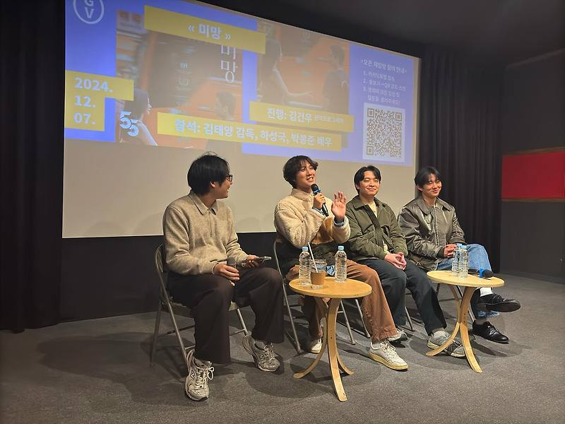

매거진 삼삼오오 · GV 모먼트
<미망> 김태양 감독, 하성국 배우, 박봉준 배우 / 2024.12.07.


<미망> 관객과의 대화 기록 2024.12.07.
참석 김태양 감독, 하성국 배우, 박봉준 배우
진행 김건우 관객프로그래머
기록 김가율
김건우: 안녕하세요. 저는 <미망> GV 진행을 하게 된 김건우 관객프로그래머라고 합니다. 그럼, 감독님 배우님 간단한 인사 부탁드립니다.
김태양: 안녕하세요. 저는 영화 <미망>의 감독 김태양입니다. 오늘 이렇게 와주셔서 정말 감사드립니다.
하성국: 안녕하세요. 저는 배우 하성국입니다. 만나 뵙게 돼서 반갑습니다.
박봉준: 안녕하세요. 저는 배우 박봉준이라고 합니다. 반갑습니다.
김건우: 먼저 감독님께 몇 가지 질문드리도록 할게요. 일단 첫 번째로 <미망>이라는 영화가 감독님께서 이전에 만드신 단편인 <달팽이>와 <서울극장> 그리고 이번에 새로 촬영한 분량까지 해서 이 세 가지를 엮어서 만든 영화인 걸로 알고 있는데요. 다른 인터뷰를 찾아보니까 애초에 장편을 염두에 두고 단편을 제작 하신 것 같더라고요. 그런 의미에서 이 <미망>이라는 프로젝트를 어떻게 시작했는지 여쭙고 싶습니다.
김태양: 일반적인 영화를 보면 사건 중심의 영화라거나 그 주인공이 겪는 감정이 되게 드라마틱하고 다이나믹하잖아요. 그런데 이 영화는 보셨다시피 되게 일상적이고 커다란 감정의 변화를 다루고 있지 않다 보니까 제작 지원이나 투자를 받는 게 쉽지 않았어요. 그래서 장편 영화를 찍는다고 생각하면 아무리 저예산이어도 꽤 많은 자본이 들어가게 되니까 어떻게 찍을지 고민하다가 모아서 찍고 모아서 찍고 이렇게 해야겠다는 생각을 막연히 했어요. 그래서 첫 번째 파트를 돈을 모아서 촬영을 시작하게 되었는데 공교롭게 이때 팬데믹이 터지게 된 거예요. 그러면서 4년이라는 시간이 걸려서 촬영하게 됐고, 그렇기 때문에 오히려 그 시간의 흐름을 더 잘 느낄 수 있는 작품이 된 것 같습니다.
김건우: 배우님들께도 질문을 드리겠는데요. 어떻게 이 <미망>이라는 프로젝트에 참여하시게 되었나요?
하성국: 우선 저는 김태양 감독님하고 같은 대학교 영화과를 나와서 20대 때 같이 영화를 공부하던 사이예요. 그래서 자연스럽게 참여하게 됐습니다.
박봉준: 저는 하성국 배우의 고등학교 선배인데요. 성국이에게 “영화를 하고 싶다. 내가 영화를 할 수 있게 도와달라” 하니까 친구들이 있는 술자리에 데리고 가줘서 거기서 열심히 놀다 보니 이렇게 좋은 친구를 만나서 영화를 찍게 되었습니다. 참 별거 없죠 (웃음)
김건우: 그럼 감독님께 한 가지 질문을 더 드리겠는데요. <달팽이>라는 영화 그리고 <서울극장>이라는 영화를 경유해서 이 <미망>이라는 제목을 채택하신 이유에 대해서 묻고 싶습니다.
김태양: <달팽이>를 언급해 주셔서 잠깐 말씀드리는데요. 2021년에 오오극장에서 상영했었던 작품이고요. 대구단편영화제에서 우수상도 받으면서 이 대구라는 공간이 저한테는 좀 남다르게 다가왔었어요. 그리고 세 편을 찍게 된 이유는 처음에 <달팽이>를 찍을 때만 해도 <미망>이라는 제목은 존재하지 않았는데 두 번째 파트에서 영화 속에 고전 영화가 한 편 나오잖아요. 그 작품이 박남옥 감독님의 <미망인>이라는 작품입니다. 근데 그 작품 속에 미망인이라는 제목을 찾아보니까 남편이 죽었는데 따라 죽지 못한 여자라고 이렇게 사전적 표기가 나와 있는 거예요. 그런데 한자 풀이를 보면 그 해석이 좀 말이 안 되는 거죠. 그리고 따라 죽지 못했다는 말 자체가 저한테는 좀 폭력적이게도 다가오고 그 말이 좀 불편해서 미망이라는 단어를 따로 찾아봤어요. 그랬더니 여러분들이 보신 것처럼 영화 속에 나오는 세 가지 뜻이 있더라고요. 그런데 참 신기하게도 제가 영화 속에서 말하고자 하는 그 세 가지 파트 속의 이야기와 잘 맞물리는 거예요. 그렇게 해서 <미망>이라는 제목으로 최종적으로 선택을 하게 됐습니다.
김건우: 저는 이번 <미망>에서 보여준 하성국 배우의 배역이 배우님께서 연기하신 역할 중에 어떻게 보면 가장 로맨틱한 역할이 아닐까? 라는 생각을 했어요. 그래서 하성국 배우님께서는 이 <미망>에서의 남자 캐릭터를 어떻게 해석하셨는지 궁금합니다.
하성국: 저는 매 작품 멜로라고 생각하고 했는데요. <미망>이라는 영화에서 남자 캐릭터 자체가 우리가 흔히 아는 절절한 사랑을 하는 모습은 안 보이잖아요. 물론 그런 마음도 있었겠지만, 감독님이 보여주고 싶었던 인물들의 어떤 순간들은 그런 것들이 시작되기 전 혹은 지나간 이후에 남아 있는 어떤 잔잔한 물결 같은 감정인 것 같다고 생각을 해서 촬영 전에 집에서 저 혼자 뭔가 사랑하는 마음을 갖고 현장에서는 사실 그냥 감독님 말을 듣고 담담하게 임했던 것 같습니다.
김건우: 박봉준 배우님의 캐릭터는 영화에서 미스터리가 되게 돋보이는 캐릭터라고 생각하는데요. 박봉준 배우님께서 연기하신 캐릭터를 어떻게 해석하셨나요?
박봉준: 마지막에 지하철역 내려갔을 때 제가 사라지잖아요. 어떻게들 생각하셨어요? 저는 귀신일 수도 있겠다고 생각했거든요. 실제로 그런 평을 들은 적이 있어서 그런 미스터리로 볼 수도 있겠구나 라는 생각이 들었고, 그냥 일상적인 사람인 듯하면서 주변에서 보기 힘든 인물이라고 생각하고 연기했던 것 같아요. 감정이나 이런 것들은 좋아하는 사람을 마음에 두고 있다면 다들 느낄 수 있는 감정일 거라 생각하고 접근했던 것 같습니다.

Q: 매 에피소드마다 비와 관련 되어 있는 것 같은데 의미가 있는 건가요?
김태양: 영화 속에서 비라는 게 첫 번째 파트에선 안 내리다가 내리기 시작하고 두 번째 파트에선 계속 내리다가 밤에 그치잖아요. 그리고 세 번째 파트에서는 ‘남자’와 ‘여자’가 각각 다른 타이밍에 한 방울씩 맞고요. 영화 전체적으로 보면 첫 번째 파트에서 시작할 때 하성국 배우가 버스 정류장에서 내리면서 시작하고 맨 마지막엔 버스에서 내리고 빈 버스가 나와요. 사실 버스에서 내리면 다시 처음이 되는 거 아닐까? 12시에서 12시처럼. 세 번째 파트에서 내렸던 한 두 방울이 다시 처음으로 돌아가서 내리기 시작한다, 이렇게도 바라볼 수 있지 않을까 생각했어요. 그래서 엔딩 크레딧에 흐르는 노래 가사 중에 ‘달랑 한 곡 들었을 뿐인데 그 많던 밤들이 다 생각나다니’라는 것처럼 마지막에 이 두 남녀가 각자 택시랑 버스를 타고 가면서 그날 맞았던 한 방울의 비가 첫 번째 파트, 두 번째 파트에 그들이 생각할 수 있는 모든 밤들이 아니었을까 생각하면서 비가 그런 느낌을 좀 파생시킬 수 있을 거라 생각했었습니다.
Q: 약간 싱크가 조금 안 맞는 부분이 있는데 혹시 의도하신 건가요?
김태양: 애초에 영화를 기획했을 때 사운드 디자인을 조금은 후시랑 동시 사이로 해야겠다고 계획을 했었어요. 그런데 그게 의도였다고 해도 한번 명확한 사고가 있었어요. 1회차 1막을 찍을 때 태풍이 와서 기기 고장이 일어난 거예요. 현장에서는 녹음이 다 잘 됐는데 편집할 때 백업 파일들을 찾아보니까 그게 다 제로 베이스였던 거예요. 그래서 너무 안타깝지만, 영화 초반에 딱 5분 분량만 후시를 했고 후시를 하게 되면서 싱크 부분들은 저의 불찰이죠. 어떻게 보면 사고였기도 하고. 그런데 결과적으로 원래 기획했던 의도랑 맞물리게 약간 사운드를 좀 앞쪽으로 계속 배치를 해서 들리게 하면 약간 영상 에세이처럼 되겠다. 그렇게 되면 관객분들이 영화를 보실 때 대사를 들으면서 자연스럽게 배경에 시선이 가지 않을까? 라는 걸 의도했었는데, 그렇다고 해도 싱크 안 맞는 건 저도 너무 속상하죠.
Q: ‘남자’와 ‘정수’의 관계가 아주 돈독하다고 느꼈는데 둘은 어쩌다 친해졌고 ‘남자’는 어쩌다 아픈 ‘정수’를 자주 찾게 되었나요?
하성국: 우선, 제가 생각했던 거는 3부에 보시면 절의 장례식장에 친구들이 모이잖아요. 그들이 20대 초반에 뭘 했는지 모르겠지만 함께 어울려 술 마시고 놀고 뒤에 나왔던 광화문에 있는 '소우'라는 카페도 가고 청춘을 함께 했었다가 각자 뭔가의 사연으로 멀어지게 되고 다른 일을 하게 되고 할 때 그중에 아픈 사람도 있었던 거죠. 시간이 흐르면서 점점 멀어진 사이가 되었겠지만 그럼에도 가장 시간이 많고 돌볼 수 있는 ‘남자’가 ‘정수’를 챙겼던 거라 생각합니다.
김태양: 그리고 극 중에서 명확하게 사건이나 관계를 제시하지 않잖아요. 여러분들이 상상할 수 있는 것들이 다 여러분만의 영화가 될 것 같은데, 극 중에 하성국 배우가 꿈을 꿨다고 말하면서 정수 눈썹이 없는 자리에 눈썹을 그렸다는 대사가 있어요. 눈썹이 없다는 대사만 봐도 어떤 아픔인지 상상해 볼 수 있는 여지가 있지 않을까 싶습니다.
Q: 길을 걸어가는 장면을 촬영할 때 관찰하는 시점으로 멀리서 찍은 이유가 있을까요?
김태양: 종로 일대 그 공간에서 촬영을 협조 받아서 찍을 때, 물론 저희가 촬영한다는 걸 고지하고 촬영했지만, 모든 시민분을 다 엑스트라로 활용할 수 있는 게 아니잖아요. 그리고 컷을 나누게 되면 인물의 배경이 컷 마다 또 달라질 수가 있고요. 극 중에 하성국 배우의 대사 중에서 그림 규칙이 나오는데요. 선을 쓸 수 있는 만큼 최대한 길게 쓸 것이라는 규칙이 하나가 있는데 그 규칙을 영화 속에 접목을 시켜서 카메라를 위치시키고 롱테이크를 적용해 보자는 게 저의 방법이었습니다. 그게 영화랑 좀 잘 어우러졌던 것 같고 그렇게 해야 인물들뿐만 아니라 배경에도 관객분들이 좀 집중할 수 있겠다고 생각했어요.
Q: ‘여자’와 ‘남자’가 둘 다 전혀 비가 내리지 않는 상황에서 둘만 한 번씩 비를 맞은 것은 어떤 의미가 있을까요?
김태양: 아까 비 이야기를 잠깐 드렸었는데 사람을 만날 때 꼭 비단 연인이 아니라 친구 관계에서도 마찬가지로, 사람 관계에서는 타이밍이 참 중요한 것 같아요. 그런데 그 타이밍이 어긋날 때 관계가 내 마음과 별개로 어그러질 때가 많잖아요. 그때는 작은 틈이었는데 나중에 시간이 흐르고 나면 많이 벌어져 있게 되고 그런 어긋난 타이밍을 표현하는 것일 수도 있죠. 또 한편으로는 어떤 관객분이 얘기를 해주셨는데 ‘정수’가 그들의 어긋난 타이밍을 위로해 주는 하나의 빗방울이 아닐까? 라는 얘기를 해주셨어요. 그래서 어떻게 보면 제가 시나리오를 쓰고 연출을 했기 때문에 그 화면 바깥에서 제가 유일하게 연출적으로 개입한 장면이 될 수 있는 것 같아요. 이 두 사람은 결국에는 이어지지 않는 것처럼 보이지만 하나의 빗방울로 연결을 시켜주고 싶다는 마음이 좀 있었습니다.
Q: 저는 이 영화가 좀 특이한 플롯의 영화라고 생각했어요. 영화를 맨 처음 구상하게 되었던 아이디어와 디벨롭하게 된 과정이 궁금합니다.
김태양 : 제가 처음 영화를 찍을 때 언젠가 영화를 찍게 되면 스토리보드를 직접 그려야겠다는 생각으로 종로 일대에서 그림을 배우고 있었어요. 수업을 들으러 가는 길이었는데 이명하 배우가 영화처럼 제 뒤에서 어깨를 두드린 거예요. 서울극장에 가고 있다고 하더라고요. 평소에 가던 길이랑 다른 길로 한번 가봐야지 해서 들렀는데 저를 우연히 마주친 거죠. 근데 어디로 가야 될지 모른다고 해서 제가 서울극장으로 안내를 해줬어요. 영화 속 하성국 배우와 걸었던 길을 그대로 걸었는데 마지막 인사가 “우리 언제 꼭 같이 영화 찍자”였어요. 그런 인사를 하고 헤어졌는데 뭔가 그날의 인상이 저한테 강하게 남아 있는 거예요. 우연이지만 이걸 필연으로 만들어야겠다는 생각이 들어서 시나리오를 바로 쓰고 진짜 한 달 뒤에 촬영을 개시하게 됐어요. 그때까지만 해도 이 영화는 단편 영화였거든요. 근데 첫날 1회차를 찍고 마지막 장면이 하성국 배우랑 이명하 배우가 악수하고 헤어지는 장면이었는데, 그때 모니터를 보는데 2막과 3막이 다 떠오르는 거예요. ‘여자’가 서울극장에 가고 있고 모더레이터를 한다고 했는데 어떤 영화를 해설할까? 2막에 나오는 ‘팀장’이라는 사람은 어떤 사람일까? 그리고 밤에 벌어지는 일인데 이 ‘여자’는 어떤 감정을 느낄까? 이런 것들이 1막에 나왔던 ‘여자’의 대사들 안에 2막에 대한 단서들이 있더라고요. 그렇게 해서 이 ‘여자’의 시점으로 이야기가 흘러가면 각각 ‘남자’와 ‘여자’가 데칼코마니처럼 이야기가 진행될 텐데 그들을 나중에 다시 섞어서 3막에서 시간이 지나고 다시 만나게 됐을 때 어떤 감정으로 만나게 될까? 이런 것들이 그 순간 정말 다 떠오르더라고요. 그래서 그때 이 영화는 단편이 아니라 장편이 되겠구나라고 생각했었습니다.

Q: ‘장기하와 얼굴들’과 영화와 아주 잘 맞아떨어진다고 생각했는데 어쩌다 ‘장기하와 얼굴들’의 노래를 삽입하게 되었는지 궁금하고요. 처음부터 염두에 두셨던 곡인지 궁금합니다.
김태양: ‘장기하와 얼굴들’의 음악은 평소 제가 즐겨 듣는 음악 중 하나예요. 그래서 ‘별거 아니라고’라는 노래와 ‘그때 그 노래’라는 노래를 고민하면서 선택했었고요. ‘장기하와 얼굴들’을 선택했던 이유 중에 가장 큰 건 제가 즐겨 듣기도 하지만 하성국 배우랑 제가 노래방을 가면 하성국 배우가 ‘장기하와 얼굴들’ 노래를 많이 불러요. 그리고 하성국 배우에게 되게 잘 붙어요. 그래서 이 친구가 노래를 불렀을 때 잘 어울리겠다는 게 가장 큰 이유였습니다.
하성국: 죄송합니다. 좋은 노래를 제가.. (웃음) 제가 생목으로 열창했는데 감독님께서 믹싱을 좀 깔끔하게 해주실 줄 알았는데 그걸 그대로 러프하게 사용하셔서 관객분들 얼굴 볼 때마다 좀 죄송하고 민망하네요.
Q: 배우님들이 하셨던 연기 중에서 가장 어려웠던 장면이 있을까요?
하성국: 노래하는 거요. (웃음) 그 노래 장면이 테이크가 적지 않잖아요. 밖으로 나가는 ‘여자’도 비춰주고, 안에도 비춰줬다가, 옆모습도 비춰주고 하는데 그 많은 컷을 찍으면서 제가 화면에 나오지 않음에도 불구하고 노래를 계속하라고 해서 현장에서 저의 출연 유무와 상관없이 노래를 계속했었어요. 그래서 제일 힘들지 않았나 싶습니다.
박봉준: 저는 두 가지 정도 있었는데요. 마지막에 고백할 때 담배 피우는 신에서 저는 원래 ‘팀장’처럼 담배를 피우지 않아요. 근데 그 ‘팀장’처럼 담배를 피우는 게 생각보다 쉬운 게 아니더라고요. 제 습관이 나오기도 하고요. 그리고 걸음걸이도 어려웠던 거 같아요. 걸음걸이에서 그 사람의 성격이 나온다고 생각하는데 제 평소 걸음걸이는 그냥 팔자걸음에 완전 뚜벅뚜벅 걸어 다니거든요. 그래서 처음에 ‘여자’에게 접근할 때 어떤 식으로 다가갈지 고민을 좀 했던 것 같습니다.
Q: 감독님께서 관객들에게 해석의 여지를 많이 남겨주셔서 좋았습니다. 그럼에도 여쭙고 싶은 것은 영화 안에서 감독님이 가장 중요하게 생각하신 영화의 테마가 궁금합니다.
김태양: 제가 사실 이게 가장 중요하다고 말하긴 좀 그렇고요. 가장 마지막에 언급이 되는 말이 “덕분이야”라는 말이잖아요. 영화의 첫 대사와 마지막 대사가 저는 참 중요하다고 생각하는 편인데 “어딘지 모르겠어요” 하면서 영화가 시작되고 마지막에 버스 기사님한테 “감사합니다” 하고 내려요. 이게 영화에서 제가 말하고자 하는 부분이었던 것 같습니다. 가장 두드러진다고 생각할 수 있는 말은 “덕분이야”라는 말인데, 그게 제가 하고 싶었던 말이 아니었을까 스스로 생각을 해보고 있고요. 테마가 있는 영화도 있지만 이 영화 같은 경우는 테마가 과연 있나? 라는 생각을 좀 해볼 수 있을 것 같아요. 제가 처음에 만들 때 이런 걸 관객분들에게 전달해야겠다 라는 건 없었고 나는 이렇게 느끼는데 관객분들은 어떻게 느낄까? 이런 느낌으로 같이 공유하면 좋겠다는 생각이 가장 컸어요. 관객분들이 이 영화를 보고 각자의 경험을 좀 반추해 보고 오히려 저한테 질문해 주시는 영화가 되지 않을까. 편지를 쓸 때 상대방이 어떻게 답장을 써줄지 기대하면서 만든 그런 영화인 것 같습니다.
김건우: 지금 재미있는 감상을 주셨는데 하성국 배우님이 부르신 노래를 음원으로 내주실 생각이 있는지 물으시고 또 이 장면 때문에 여러 회차를 극장에서 보고 있다는 분도 계시네요.
김태양: 여러분 있잖아요. 저희 팀끼리는 사이가 좋다 보니까 이렇게 관객분들이 영화를 보고 좋아해 주신다면 하성국 배우가 한번 불러주면 어떨까? 하는 이야기를 해봤었어요. 그런데 이 친구가 부끄러움도 많고 노래를 완창하기에는 GV 시간이 짧잖아요. 그리고 지금 시국도 시국이고 여러 가지 한국 영화들과 외화들이 많이 개봉하면서 이 영화를 볼 수 있는 극장이 점점 없어지고 있긴 해요. 그런데 오늘을 기점으로 해서 조금만 애를 쓰면 독립 영화의 상징적인 숫자인 1만이 넘을 것 같습니다. 혹시나 1만이 넘으면 노래를 녹음한 뮤직비디오가 나올 수 있도록 저는 그렇게 마케팅을 해보고 싶은데 배우님이 도와주지 않고 있습니다.
하성국: 너무 감사한 일이라서 심히 고려해 볼 만하죠. 근데 여러분 제가 너무 내향적인 사람이라서 이렇게 행사하고 집에 가면 아무것도 못 하거든요. 기운이 다 빠져가지고요. 네.. 그렇다고요. (웃음)
Q: 미망이라는 단어를 여러 뜻으로 각 시작 막마다 올려주셨는데 이것과 제일 마지막에 ‘작은 바람’이라는 것의 의미가 어떻게 이어지는지 궁금해요.
김태양: 미망의 뜻은 한자어의 특성상 의미를 조합해서 새롭게 만들 수가 있잖아요. 마지막에 나오는 ‘작은 바람’은 제가 만들어본 단어였고요. 이 영화가 왜 마지막에 ‘작은 바람’으로 끝나냐는 질문으로 제가 이해되는데, 그 말씀을 드리려면 타이틀 카드 색깔을 말씀 드려야 될 것 같아요. 처음에 빨간색이 나오고 녹색이 나오고 파란색이 나오잖아요. 근데 색깔은 중첩이 되면 검어지거나 탁해지는데 빨간색과 녹색과 그다음에 파란색은 빛의 삼원색이기도 합니다. 그래서 빛의 삼원색은 더 씌워지면 투명해지거든요. 그래서 마지막 타이틀 카드는 (움직이는) 버스의 장면을 배경으로 투명하게 했고 버스의 그 빈 공간이 어딘가로 나아가는 미래가 아닐까? 그리고 여러분들이 앉아 계신 그 객석이 버스의 뒷자석처럼 느껴지지는 않을까? 라고, 스스로 생각을 해봤어요. 그리고 두 번째 파트에서 이명하 배우가 관객분들을 향해서 “이 영화가 끝나고 극장 문을 열고 나섰을 때 여러분들의 삶이 영화처럼 계속 이어지길 바란다”라는 말을 하잖아요. 그렇다면 이 영화가 끝났다고 해서 영화가 끝난 게 아니라 여러분들이 지금 이 극장을 나섰을 때 하루가 영화처럼 이어질 수 있는 거죠. 좋은 영화는 끝나고 나서 시작된다고 하더라고요. 그게 계속 이어지길 바라는 저의 바람이었습니다.
Q: 1막에서 하성국 배우님이 담배를 끊었다고 했는데 ‘여자’와 헤어지고 그 골목에서 담배를 피우는 의미는 무엇이었을까요? 또 감독님께서 소재로 쓴 광화문과 이순신 동상을 선정하게 된 계기와 개인적으로 갖고 있는 에피소드 같은 게 있는지 궁금합니다.
하성국: 1막에서 이명하 배우랑 헤어지고 새로운 여자친구인 정수지 배우를 만나면서 끊었을 거로 생각했어요. 우연히 만나고 짧게 걷고 헤어지면서 중간에 이명하 배우가 골목길에서 담배를 피우는 걸 옆에서 지켜보잖아요. 그때 그 자리에서 그 ‘여자’는 뭘 봤을까? 하는 생각과 옛날 일들이나 감정이 확 왔지 않았을까. 그래서 같은 자리에서 같은 것을 보고 이 ‘여자’는 지금 어딜 가고 있을까, 어떻게 지금 이렇게 걸어오게 돼서 나를 갑자기 만났을까. 그리고 정수지 배우한테 전화가 와서 담배를 버리고 다시 가잖아요. 그게 현실인 거죠. 지금 거기에 있으면서 과거에 대한 회상과 복잡한 감정이 들지 않았을까 생각했습니다.
김태양: 그리고 광화문 일대를 로케이션으로 선정했던 이유는 저도 지역에서 나고 자라서 영화 공부를 위해 서울로 상경을 한 거거든요. 서울이라는 공간에서 가장 흥미롭게 바라봤던 공간이 그 종로 일대입니다. 흔히 사대문 안이라고 하잖아요. 서울에서 가장 오래된 곳이면서 궁궐과 높은 빌딩이 공존하는 곳이기도 하죠. 그다음에 지금은 을지로라는 곳이 굉장히 힙해지면서 어르신들이 많이 계셨던 그 공간에 젊은이들이 들어가서 가게를 열기도 하지만 또 보쌈 거리처럼 오래된 피맛골도 함께 존재하고 그런 것들이 과거, 현재, 미래가 혼재된 곳이라고 생각했어요. 아마 그런 곳은 비단 서울뿐만 아니라 대구에도 있고 광주에도 있고 요즘에는 도시마다 빠른 변화를 겪고 있어서 꼭 서울에만 국한되는 공간성은 아니라고 생각했고요. 추상적인 배경이 될 수 있다고 생각해서 광화문을 선택했습니다. 그리고 실제 광화문에 공사를 정말 많이 합니다. 영화 속에서 두 남녀가 그 공사하는 배경을 걷는 모습을 원경으로 담으면서 “그 공간이 사라질지 모른대” 이런 말들을 “지났던 과거들이 이제는 잊혀질 것 같아”라는 의미의 영상의 시처럼 은유할 수 있지 않을까, 공사 중인 것들은 계속 기억이 허물어지고 생성되는 것처럼 변화하는 것을 그렇게도 표현할 수 있겠다라고 생각하면서 광화문 일대를 선택했습니다.

Q: 이번에 이 영화를 보고 배우님들의 연기가 약간 ‘아키 카우리스마키’ 감독 스타일 같다는 생각이 들었어요. 감정선을 크게 드러내지 않는 그런 연기가 좀 두드러져 보였는데 이거를 의도적으로 기획하신 건지 아니면 배우님들의 연기 스타일인 건지 궁금합니다.
박봉준: 제가 생각했을 때 감정을 드러내는 장면, 그러니까 의도적으로 드러내는 장면은 마지막에 ‘팀장’이 지하철역 내려가기 전에 살짝 돌아서 어떤 표정을 지을 때가 있어요. 그때가 이제 보여줄 만한 감정을 드러낸 경우인데 그마저도 사실은 보는 관객분들이 자기가 겪었던 어떤 일들을 떠올려서 그것에 아쉬움으로 보는 사람도 있었으면 좋겠고 후련함으로 보는 사람도 있었으면 좋겠다는 생각으로 연기를 했던 것 같아요. 그래서 이 영화는 인물의 정확한 감정선을 잘 보여주는 것보다는 그 어딘가 중간 지점에 있고 보는 관객분들이 편하게 자기의 일들을 떠올리거나 자기의 형상 관계를 떠올려서 대입해 볼 수 있게끔 하는 그런 의도가 좀 있었습니다.
하성국: 한 번씩 카페에 앉아서 밖에 사람들이 걸어 다니는 걸 보면 그 사람들이 아무리 싸우거나 기쁜 일이 있다고 해서 영화처럼 막 표출하는 사람은 잘 없잖아요. 물론 이들 각자 안의 내면에는 되게 복잡한 감정과 들끓는 에너지가 있지만 실생활에서 우리는 그렇게 모든 걸 다 표현하지 않죠. 그것을 생각했을 때 무덤덤하게 이런 말들과 손짓들이 오가면서 약간 덮어줘야 조금 더 현실성이 생긴다는 느낌이 있었고요. 영화 속 저런 내용의 대화를 하려면 감정적이지 못하게 이미 설계가 돼 있다는 느낌도 있어서 감독님 의견도 한번 들어봐야 할 것 같습니다.
김태양: 그렇게 썼죠. 제가 시나리오를 쓸 때 사람들이 실제로 말하는 것처럼 좀 써봐야겠다고 말을 하면서 썼어요. 저는 실제로 영화는 영상 언어로 표현된다고 생각하는 편이에요. 그런데 이 영화 같은 경우는 처음부터 그렇게 접근하고 시작했기 때문에 대사가 좀 더 현실성을 띌 수 있는 대사들이면 좋겠다. 이 인물들이 되게 평범해 보였으면 좋겠다는 생각으로 접근을 해봤던 것 같아요. 평범하지만, 그 이면에 들어가서 인물들이 자기가 말하는 걸 좀 에둘러서 표현하면서 중의적으로 자기 마음을 숨기다 보면 한국 관객분들은 그걸 다 눈치채실 것 같은 거예요. 한국말이라는 게 말의 다의성이라든지 뉘앙스가 되게 중요하잖아요. 그래서 그렇게 표현해도 괜찮지 않을까하고 생각했었습니다.
Q: 극 중 캐릭터 이름이 없더라고요. 이름이 나오는 건 ‘정수’밖에 없고 그냥 ‘남자’ ‘여자’로 나오던데 이렇게 설정하신 이유가 있을까요? 그리고 두 번째 에피소드에서 ‘여자’가 ‘팀장’하고 헤어지고 난 다음에 ‘조카’랑 통화를 하는데 ‘조카’가 “사랑해”라고 하니까 약간 울컥한 듯한 연기를 하시잖아요. 그 이유도 궁금했습니다.
김태양: 계속 반복되는 얘기인데 관객분들이 본인의 기억이나 추억들을 좀 떠올리셨으면 좋겠다. 영화에 푹 빠져서 보는 게 아니라 살짝 떨어져서 보면서 아까 하성국 배우가 얘기한 것처럼 창밖으로 사람들이 지나갈 때 한번 상상해 볼 수 있잖아요. 그렇게 이 영화를 보시면서 창밖에 있는 풍경을 보는 것처럼 내가 옛날에 이런 일이 있었는데 라고 생각해 주시면 좋을 거 같았고, 그러려면 이 인물들이 특정 인물로 불리면 안 된다고 생각했어요. 이름이 불리면 그 영화 속에서 존재하는 인물로 특별해지잖아요. 그래서 이름은 다 제외하고 영화 속에서는 죽고 없어진 인물만 '정수'라고 표현했던 거는 그런 이유였습니다. 그리고 두 번째 질문은 제가 각본을 쓸 때 이 ‘여자’가 ‘팀장’이랑 걷게 되는 그 모든 과정이 조금 사랑의 생로병사처럼 느껴지면 좋겠다고 생각했었어요. 처음에는 이 ‘팀장’이 다가와서 같이 걸음을 동행하고 서로에게 호기심을 갖다가 어느 순간 ‘팀장’이 익숙해지고 계속 그럴 수 있다는 말에 조금 발끈하기도 하잖아요. 처음엔 사랑했던 사람의 모습도 나중에는 지겨워지고 짜증 날 때가 있는 것처럼 그러다가 결국엔 어떤 이유로든 서로 헤어진다고 생각해서 ‘팀장’을 보내는데 그러고 나서 “내가 나라서 그런가”, “사랑을 하고 싶은데 다 귀찮아”라는 얘기를 하죠. 근데 조카가 보내는 그 티 없는 사랑한다는 그 말이 사실은 내가 듣고 싶은 말의 전부가 아닐까? 내가 누군가한테 하고 싶은 말이 아닐까? 하는 이런 것들이 문득 울컥해질 수 있을 것 같다는 생각이 들었습니다.
하성국: 제가 그 장면 되게 좋아합니다. 저도 조카가 있어서.
Q: 영화 외적으로 질문을 드리고 싶은데 일단 영화를 보는 내내 감독님께서 하고 싶은 이야기를 영화를 통해서 하고 있다는 느낌을 많이 받았거든요. 어쨌든 감독님께서 지금 예산 문제라든가 현실적인 문제라든가 그런 것 때문에 못 찍고 있는, 가슴 속에 있는 그런 시놉시스가 있으실 것 같은데 한 10년 뒤쯤에 어떤 걸 찍고 싶으신지 여쭤보고 싶습니다.
김태양: 차기작은 지금 준비하고 있어요. 이미 집필은 끝났고 <서울 이야기>라는 작품을 준비하고 있습니다. <동경 이야기>, <타이페이 스토리>, <뉴욕 스토리> 다 있잖아요. 근데 왜 서울 스토리는 없을까? 왜 지금까지 그 제목을 쓰지 않았을까? 그러면 빨리 그 제목을 쓰고 싶다는 생각이 들었어요. ‘남자’랑 ‘여자’가 이 영화에서는 헤어지지만, 그 영화 속에서는 결혼합니다. 아이도 있고요. 그런데 영화의 시작은 이혼하면서 시작해요. 왜 이혼을 할까요? 여러 가지 이유가 있겠죠. 그래서 주인공은 이 ‘남자’가 아니고 ‘남자’의 ‘엄마’예요. 아들이 이혼한다고 하니까 시골에 계시던 ‘엄마’가 말리려고 올라와요. 이 ‘남자’는 이혼하기 싫다고 집을 나가버렸어요. 그래서 손녀랑 같이 이 친구를 잡으러 서울을 떠도는 이야기를 차기작으로 준비하고 있습니다. 그리고 10년 정도 뒤에는 전쟁 얘기도 해보고 싶어요. 제가 어떤 잡지를 읽었는데, 영화 속 두 번째 작품에서 나오는 <미망인>의 박남옥 감독님이 최초의 여성 영화 감독님이신데 그분이 전쟁할 때 기자셨어요. 그리고 대구가 영화의 중심지였어서 대구에서 활동하시던 분이셨거든요. 그런 분의 이야기는 저에게 항상 궁금증을 자아내죠. 그렇게 시대극이든 뭐든 이야기가 무궁무진한 것 같고요. 그렇다 보니 제가 조금 더 공력이 쌓여야 될 것 같고 관객분들과 호흡하는 방법을 좀 배워가야 할 것 같아요. 이번에도 개봉하면서 많은 걸 배우고 있어요. 10년 뒤에도 이 친구들과 함께 영화를 찍을 수 있게 노력해 보겠습니다.
Q: 하성국 배우님께 질문드리고 싶습니다. ‘여자’를 길에서 우연히 만나고 그 이후에 한 번도 안 만난 것 같은데 ‘여자’를 친한 친구 장례식장에서 만났을 때는 어떤 기분이었을까요?
하성국: 3부에 보시면 택시 기사 하는 후배에게 오며 가며 몇 번 봤었다는 얘기를 해주거든요. 저도 그 시나리오 보고 잠깐이지만 보긴 했었겠다고 생각하고, 준비를 해서 촬영장에 갔었어요. 너무 놀라거나, 기쁘거나 이런 것이 아니라 오히려 덤덤하게, 좀 놀라긴 했지만, 올 사람이 왔구나. 하는 정도로 준비했던 것 같습니다. 그래서 절에서 촬영했던 거 보시면 좀 시큰둥하잖아요. 복잡했겠지만 그냥 좀 자연스럽게, 크게 놀랍지 않은 마음이었을 거 같아요. 그리고 딴 얘기이긴 한데 제 성이 하 씨잖아요. 좀 특이한 게 달성 하 씨입니다. 여기 달서구 옆에 달성군 있잖아요. 저희 큰 집이 거기 있어서 누나도 살고 조카도 살고 해서 저한테는 고향 같은 곳입니다. 여기서 산 적은 없는데 대구를 거의 매년 가족들 보러 오고 해서 너무 반갑다는 그런 저의 소회였습니다.
김건우: 감사합니다. 대구와 연이 있으셨군요. 그러면 이제 GV를 마무리하면서 감독님과 배우님들 끝 인사하시면서 앞으로의 행보나 홍보를 해주셔도 좋고요. 관객분들과 인사 나누시면 될 것 같습니다.
김태양: 오늘 주말에 시간 내기 어려우셨을 텐데 직접 예매하고 극장에 와서 이렇게 오랜 시간 동안 봐주셔서 너무 감사드리고요. 좀 세속적인 얘기지만 곧 1만이 목전인데 하성국 배우가 음원을 낼 수 있도록 여러분들이 많이 응원해 주시면 감사하겠습니다.
하성국: <미망>으로 처음 지방으로 와서 행사하는 건데 대구라서 더 좋고요. 나라가 좀 어지럽잖아요. 그런 와중에도 극장 찾아주시고 영화 봐주시고 이렇게까지 남아주셔서 너무 감사드립니다. 혹시 내년에도 극장에서 화면에 제가 나온다면 그때 걔가 또 나오네 이렇게 기억만 해주시면 감사드릴 것 같습니다. 감사합니다.
박봉준: 저는 이 얘기를 안 하려고 했는데 저도 대구에서 대학교를 다녔습니다. 달성 하 씨보다 훨씬 더 인연이 깊죠. (웃음) 근데 그때는 제가 다른 전공으로 학교를 다녔어요. 그래서 이후에 연기를 하게 됐고 이제 본격적으로 연기 활동을 시작한 지는 얼마 안 됐는데 이렇게 대구에 온다고 했을 때 좀 이상한 기분이 들더라고요. 그때의 나랑 지금의 내가 너무 다른 일을 하고 있어서. 그리고 현재 너무 행복하다는 생각을 했습니다. 그래서 이 영화가 정말 잘 됐으면 좋겠어요. 왜냐하면 이 영화가 잘 돼야 제가 계속 행복할 수 있으니까요. (웃음) 그래서 여러분들이 재밌게 봐주시고 주변 사람들에게 추천도 해주시면 이렇게 친구들끼리 더 좋은 영화 많이 찍을 수 있을 것 같아요. 오늘 너무 감사드리고 좋은 하루 보내셨으면 좋겠습니다. 감사합니다.
김건우: 네, GV는 여기서 마무리하도록 하겠습니다. 주말 오후 극장에 찾아와 주신 관객분들 감사드립니다. 조심히 들어가세요.